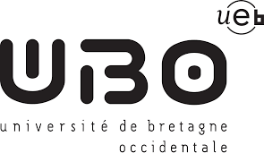
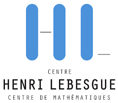
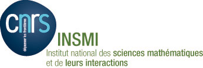

L’édition 2024

10 lycées, 20 lycéennes
En 2024 du 24 au 28 juin , la station biologique de Paimpont en forêt de Brocéliande (centre Bretagne)a accueilli 20 lycéennes mouettes, issues des classe de seconde de 10 lycées différents d’Ile de France Sud et de la métropole rennaise pour leur proposer une semaine d’initiation à la recherche en mobilisant mathématique et informatique dans le but de répondre à des questions liées à des enfeux autour des transitions environnementales.
Les Lycéennes mouettes étaient logées CPIE.
Durant cette semaine, par petits groupes, elles ont exploré des questions écologiques ou environnementales.
Quels sont les leviers dans notre alimentation pour limiter notre empreinte carbone ?
Comment évaluer la diversité des espèces animales présentes en un site à partir de techniques d’observation peu invasives ?
Comment prédire les températures de demain en France ?
Cette exploration a nécessité de mobiliser des outils mathméatiques et informatiques.
Les animatrices scientifiques étaient des chercheuses et enseignantes chercheuses :
Anna Bonnet : maître de conférences à Sorbonne Université, spécialiste de l’inférence statistique des processus ponctuels
Sophie Donnet : directrice de recherche à INRAE, spécialiste de la modélisation des interactions entre espèces
Marie-Pierre Etienne : maître de conférences à L’Institut Agro Rennes-Angers, spécialiste de l’écologie du mouvement
Juliette Legrand : maître de conférences à L’Universite de Bretagne Occidentale , spécialiste des modèles de valeurs extrêmes, notamment dans un contexte climatique et océanographique
Pour reposer les cerveaux et nourrir la bonne humeur, les lycéennes mouettes ont pu contacter sur les animations proposées par des professionnelles de l’animation : Manon Perrignon (titulaire du BAFA et étudiante en thèse à l’interface statistique et agro alimentaire, sa thèse en 180s pour en savoir plus), Fanny Mas (titulaire du BAFA et étudiante en L3 de mathématique à l’université Paris Saclay), Camille Trohel (titulaire du BAFD et organisatrice de séjour pour enfants et adolescents). Ainsi hors des temps scientifiques, on a pu s’initer à l’accrobranche, profiter de ballades contées dans la forêt de Brocéliande, s’instruire sur Arthur et ses amis au centre Arthurien, mener une enquête policière, se laisser émerveiller par des artistes de cirque et surtout rire et partager de bons moments.

Les Sponsors
| Ce séjour porté par L’Association Animath |
|---|
a été entièrement financé grâce
- aux employeurs des animatrices scientifiques
|  |
|---|
- à des laboratoires de recherche
Un laboratoire de recherche ou une unité de recherche est une structure donnant un cadre de travail aux chercheurs. Il peut être affilié à une université, à une école du supérieur, ou à un organisme de recherche scientifique voire le plus souvent à plusieurs entités de ce type.
| LMBA |
|---|
- à des groupes scientifiques
|  CHL |
|---|
- des organismes de recherche
|  INSMI | MathNum |
|---|
- des programmes de médiation scientifique
 Médiation Scientifique à AgroParisTech Médiation Scientifique à AgroParisTech |
|---|
- le programme MathC2+ et ses mécènes.
un grand merci à eux pour avoir permis cette belle semaine !